Government of Kerala
Department of Education
State Council of Educational Research and Training (SCERT) Kerala
2016
Standard V
Social Science
Social Science
Social Science
Part 1
Part 1
Part 1
KT-129 / 1-Soc Science 5 (E)Vol - 1
Page 1
Page 2
Jana-gana-mana adhinayaka, jaya he
Bharatha-bhagya-vidhata.
Punjab-Sindh-Gujarat-Maratha
Dravida-Utkala-Banga
Vindhya-Himachala-Yamuna-Ganga
Uchchala-Jaladhi-taranga
Tava subha name jage,
Tava subha asisa mage,
Gahe tava jaya gatha.
Jana-gana-mangala-dayaka jaya he
Bharatha-bhagya-vidhata.
Jaya he, jaya he, jaya he,
Jaya jaya jaya, jaya he!
India is my country. All Indians are my broth-
ers and sisters.
I love my country, and I am proud of its rich
and varied heritage. I shall always strive to be
worthy of it.
I shall give respect to my parents, teachers and
all elders and treat everyone with courtesy.
I pledge my devotion to my country and my
people. In their well-being and prosperity
alone lies my happiness.
Prepared by :
State Council of Educational Research and Training (SCERT)
Poojappura, Thiruvananthapuram 695 012, Kerala
Website : www.scertkerala.gov.in
E-mail : scertkerala@gmail.com
Phone : 0471-2341883, Fax : 0471-2341869
Typesetting and Layout : SCERT
First Edition : 2014, Reprint : 2016
Printed at : KBPS, Kakkanad, Kochi-30
© Department of Education, Government of Kerala
The National Anthem
PLEDGE
Page 3
Dear Students,
Social science focuses on studying the individual's
relationship with society and environment. Man's sense
of community and hard work contributed to the birth of
our culture and civilization. Harmonious efforts are
essential for the beneficial existence and security of our
social life. Learning social science will help us to skilfully
face the challenges of the changing times and to progress
with caution. It will help us to develop the knowledge,
attitude, and skills required to become ideal citizens who
strive for the common good.
Hope you will be able to do further explorations in this
field and creatively employ them for social development.
Wishing you the best,
Dr. P. A. Fathima
Director
SCERT
Page 4
Textbook Development Team
Members
Experts
Dr. Abdul Rasak P.P.
Associate Professor,
Department of History,
P.S.M.O College, Thirurangadi
Dr. N.P. Hafiz Muhammed
Associate Professor (Rtd.),
Department of Sociology,
Farook College, Kozhikode
Mahalingam S.
Associate Professor (Rtd.),
Department of Geography,
Govt. College, Chittoor
P.S. Manoj Kumar
Assistant Professor,
Department of History, K.K.T.M. College,
Kodungalloor, Thrissur
Dr. T Neelakantan
Associate Professor,
Department of Geography,
University College, Thiruvananthapuram
Dr. Priyesh M.
Assistant Professor,
Department of Economics,
University College, Thiruvananthapuram
Dr. Venumohan
Assistant Professor,
Department of History,
Govt. College, Nedumangadu
Academic Co-Ordinator
Chithra Madhavan, Research Officer, SCERT
Nisanth Mohan M.
HSST, Govt. Girls H.S.S., Karamana,
Thiruvananthapuram
Nisha M.S.
UPSA, P.H.S.S., Mezhuvelli,
Pathanamthitta
Rajan K.
G.U.P.S., Thiruvazhiyod, Palakkad
N. Sukumaran
Govt. V & H.S.S. for Girls, Manacadu,
Thiruvananthapuram
Varghese Pothan
HSST, St. John's H.S.S. Mattom,
Mavelikkara
Yusaf Kumar S.M.
HSST, G.M.B.H.S.S., Attingal
Abdul Hameed V.
HSA, MUMVHS, Vadakara, Kozhikode
Abdul Samad K.C.
HSST, Govt.H.S., Vadakara,
Puthoor (P.O.), Kozhikode
Esha V.K.
UPSA., A.M.L.P.S., Vettikkad,
Perinthalmanna, Malappuram
Gopakumar G.P.
Lecturer, DIET, Kollam
Hari Pradeep S.
HSA, S.V.H.S., Pullad,
Thiruvalla
Hari V.
UPSA, Unity A.U.P.S.,
Thenkkara
Jayakrishnan O.K.
HSA, K.P.C.H.S.S., Pattanoor P.O.,
Pattanoor, Kannur
English Version
Dr. Priyesh C.A
Assistant Professor,
Department of Economics,
University College, Thiruvananthapuram
Saidalavi C.
Asst. Professor, WMO Arts & Science
College, Wayanad
Meera Baby
Asst. Professor, Department of English,
Govt College Kanjiramkulam
Praseeda P.
Asst. Professor, Department of English,
Govt College Kanjiramkulam
Nisanth Mohan M.
HSST in Geography,
Govt. Girls H.S.S., Karamana,
Thiruvananthapuram
G.V. Hari
HSST in Sociology, NSS HSS Pandalam
Page 5
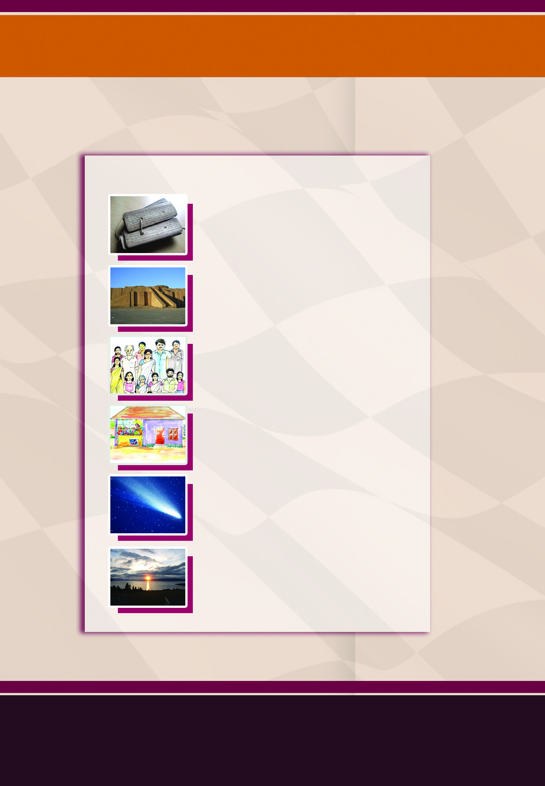
Contents
1. A Road to History
- 7
2. From Stone to Metal
- 18
3. Our Family
- 29
4. Spend Carefully
- 39
5. Universe : A Great Wonder - 49
6. Continents and Oceans
- 61
Page 6

Certain icons are used in this
textbook for convenience
Extended activities
Let us assess
Significant learning outcome
Summary
Questions for assessing the progress
For further reading
(Need not be subjected to evaluation)
Page 7
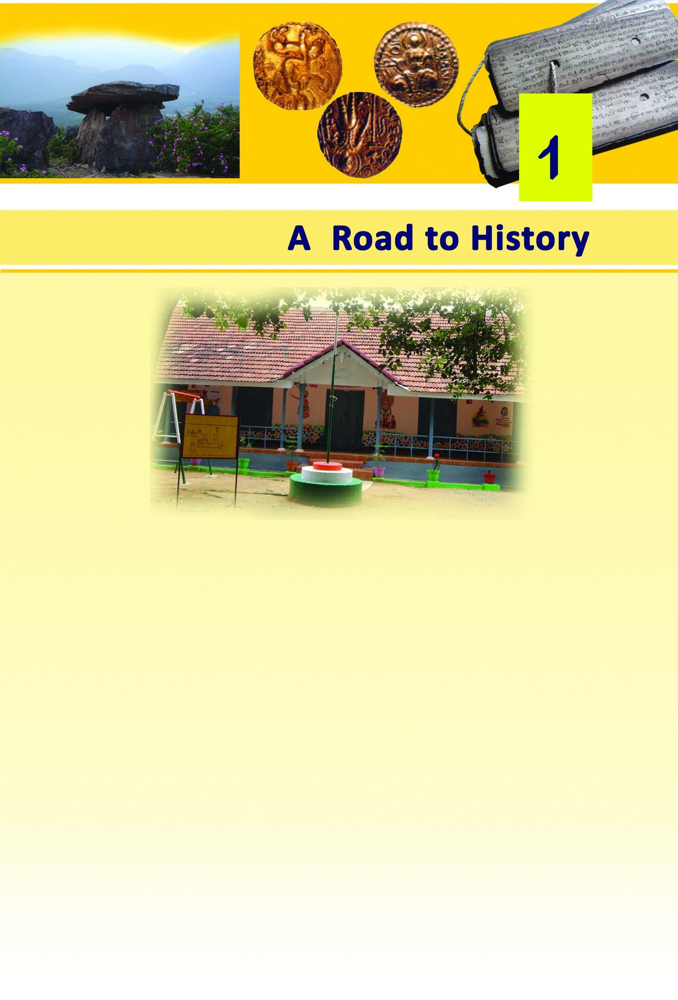
7
A Road to History
A Road to History
This is the picture of a school. You are also studying in such a
school, aren't you? You know a lot of facts about your school,
don't you? Try to write down the details of your school.
•
Name of the Headmaster/Headmistress
•
Number of students
•
Number of teachers
•
Names of teachers
•
Library/Laboratory/Computer Lab facilities
•
Availability of playground
•
Number of buildings
•
Details of the place where the school is situated (district,
taluk, village, survey number)
•
Panchayath/Municipality/Corporation
Page 8
Social Science V
Social Science V
8
Prepare a brief report including the data collected, and discuss
it in your class.
Discover and Record
Now, let us gather the data on the past of our school.
What information to be found out?
•
Year of establishment
•
Former teachers
•
Alumni
•
Buildings at the time of establishment
•
Later changes
•
•
From where do we get this data?
It is possible for you to gather some of the data using the
following hints
•
Name board of the school
•
Plaque
•
School diary
•
Annual souvenir
•
Attendance registers of previous years
•
Admission register
Let us collect some information orally. To whom shall we
approach for this?
•
The elders living near the school.
•
Alumni
•
PTA representatives
Do we need more data?
•
We can collect more data from the school wiki of IT@
school.
Page 9
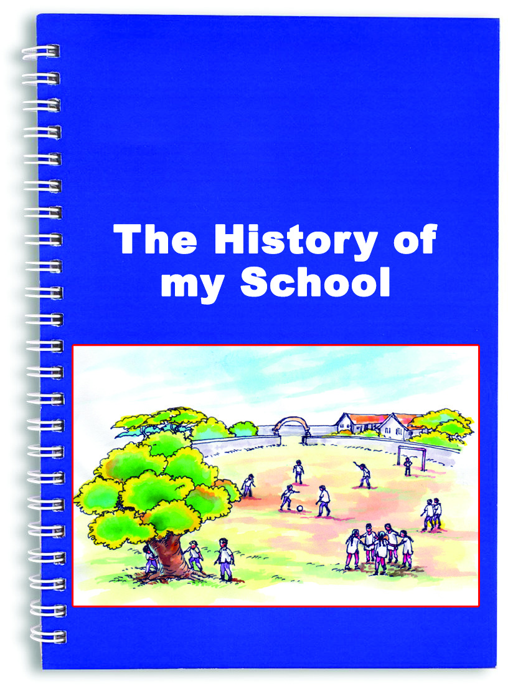
9
A Road to History
A Road to History
Using the information and photos gathered, prepare a book
titled 'The History of my School'. You can release it in the
class PTA meeting or assembly.
It is the written records and oral
information that helped us to write
the history of our school. These are
the sources of data for writing the
history of the school.
What are the sources that you
depended to record the history
of your school?
Searching for Evidence
Like the school, each family, village and country has its own
history. We get information on the food habits, dress, dwelling
places, occupation and administrative system of different ages
through historical inquiry. This information helps us to
recognize the gradual development that human beings attained
through different periods of history. History is the record of
the progress that human beings acquired down the ages.
Pre-Historic Period
You have mainly used the written records and documents to
prepare the history of your school, haven't you? What sources
can be used to draw out information on human life that existed
before the beginning of the art of writing?
The remains of the materials that human beings of those ages
made and used help us to construct knowledge on those
periods. A few such objects can be found in the pictures given
below.
The period before the formation of art of writing is known as
Pre-Historic Period.
Page 10
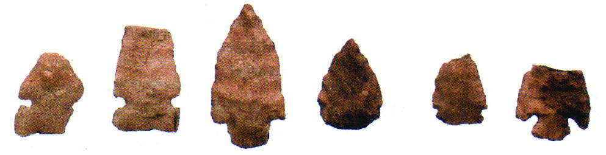
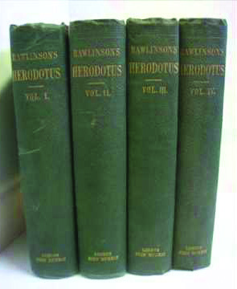
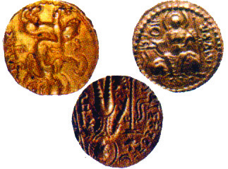
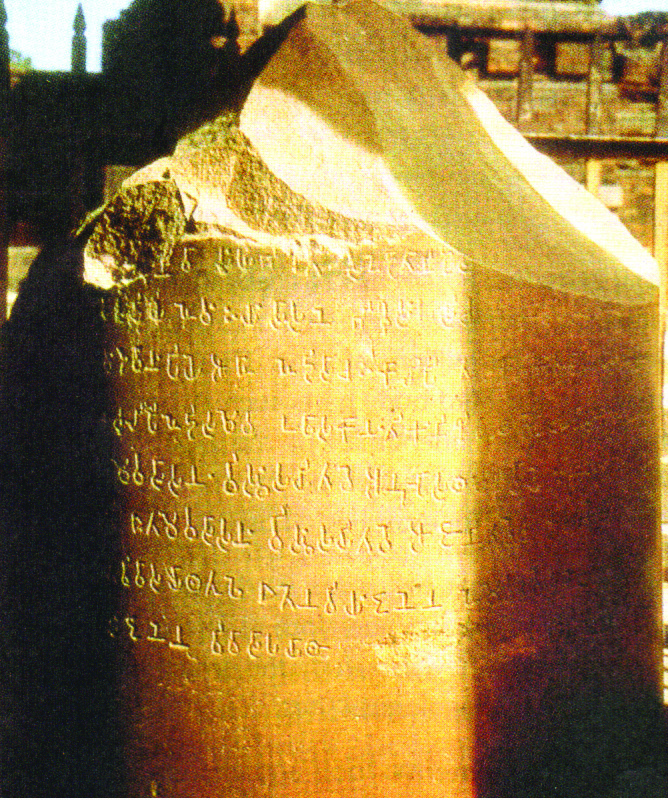
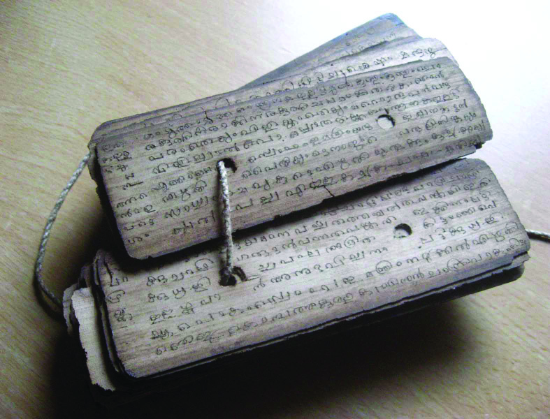
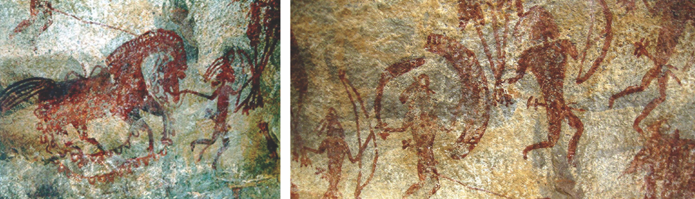
Social Science V
Social Science V
10
10
Historic Period
Observe the pictures given below.
Stone tools used during the Pre-Historic Period
Cave paintings - Bhimbetka
Stone inscriptions
Palm leaves
Early coins
Books
These sources provide written information and they help to record
history along with the sources from the Pre-Historic Period.
Page 11
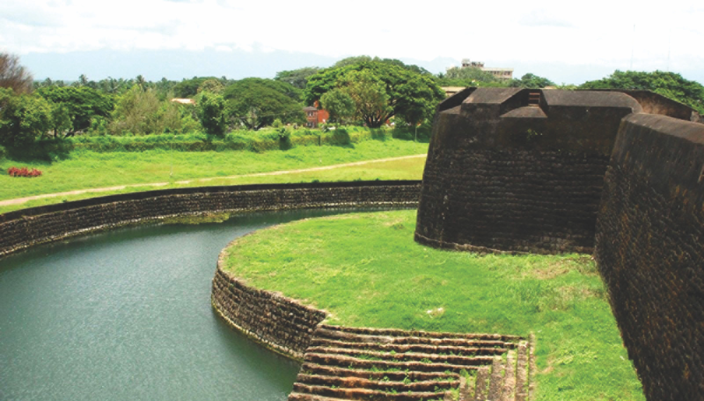
11
11
A Road to History
A Road to History
This is a fort in Palakkad. It is more than 200 years old. We
still preserve it. Why are the historical monuments preserved?
Discuss.
Visit places of historical importance and prepare a report on
it.
Palakkad Fort
The period with written records is known as the Historic Period.
Differentiate between the historic period and pre-
historic Period.
Let us Preserve the Historical Remains
You would have either visited a museum or heard of it,
wouldn't you?
What are the objects preserved in a museum?
A museum keeps the objects or their remains that were once
used by man. They are preserved because they give much
valuable information on the past of human life.
Besides these objects, monuments like forts, palaces, old
buildings, etc. are preserved because of their historical
importance.
Page 12
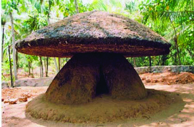
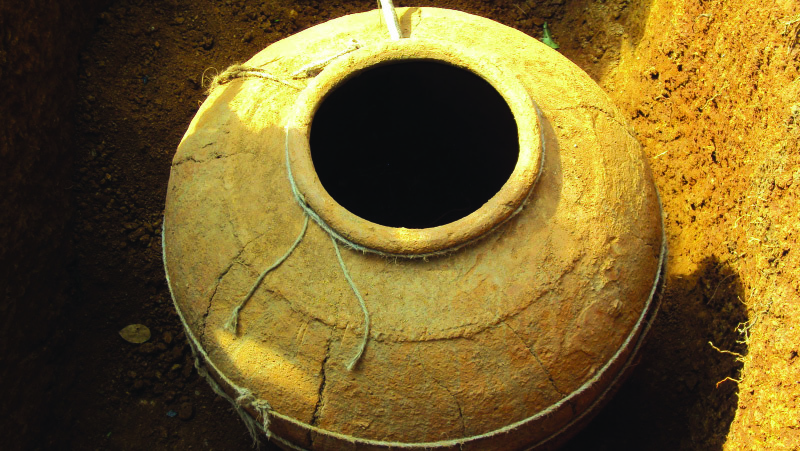
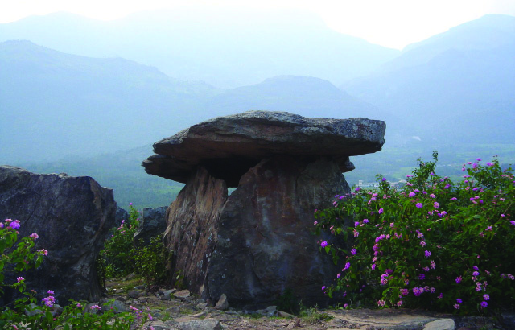
Social Science V
Social Science V
12
12
Seek and Find
The pictures given below are the remains related to the funeral
practices in ancient Kerala. Find out their names and write
them down in the columns provided.
History Museum in School
Collect the objects of historical importance from your home
and locality and set up a history museum in your school.
Things to be collected are
•
Coins
•
Palm leaves
•
Antique lamps
Page 13
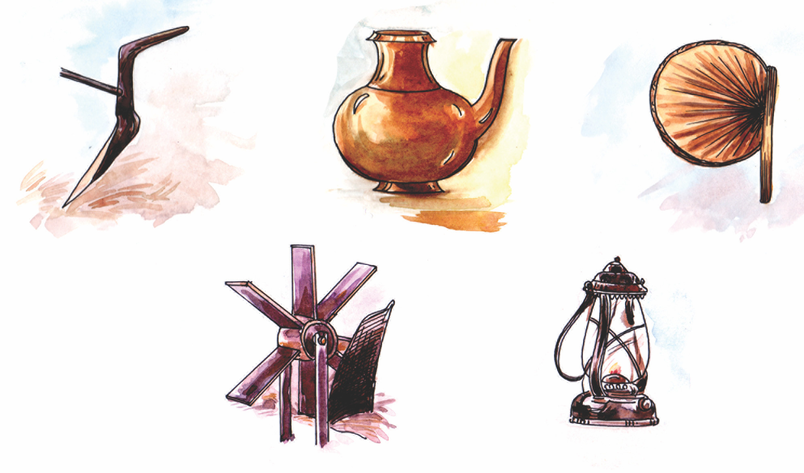
13
13
A Road to History
A Road to History
•
Old utensils
•
Old tools
•
Traditional agricultural tools
•
•
In Search of Data
These objects were used by our forefathers in the past. Make
an enquiry on their importance with the help of the elders in
your family and locality. Prepare a report based on the
information gathered and present it in your class.
There are a lot of historical remains around us. They are to be
preserved for the coming generations as it would provide them
with the opportunity to learn about the past. If we are able to
recognize the period to which these sources belong, the study
about them would be more interesting.
Prepare an Album
Collect pictures of historical sources and prepare an album
with proper description.
KT-129 / 2-Soc Science 5 (E)Vol - 1
Page 14
Social Science V
Social Science V
14
14
500
400
300
200
100
100 200
300
400
500
1
1
AD
BC
Reckoning Time
When did India attain
independence? It was in
1947, as you know.
The formation of the state of
Kerala was in 1956.
How many years after
independence was the state of Kerala formed?
Gandhiji led the Salt Sathyagraha in 1930.
How many years before the independence was the Salt
Sathyagraha organized?
Here, chronology is measured based on the year of Indian
independence.
Today, the Christian era is the common scale of chronology all
over the world. The period in history is divided into AD and
BC based on the birth of Jesus Christ. The time before and
after the birth of Jesus Christ is known as BC (Before Christ)
and AD (Anno Domini) respectively. Now they are also known
as CE (Common Era) and BCE (Before Common Era).
Anno Domini
These Latin words mean 'In the
year of our Lord'. It signifies
the year of birth of Jesus
Christ.
This picture helps us to recognize the concept of AD and BC.
Page 15
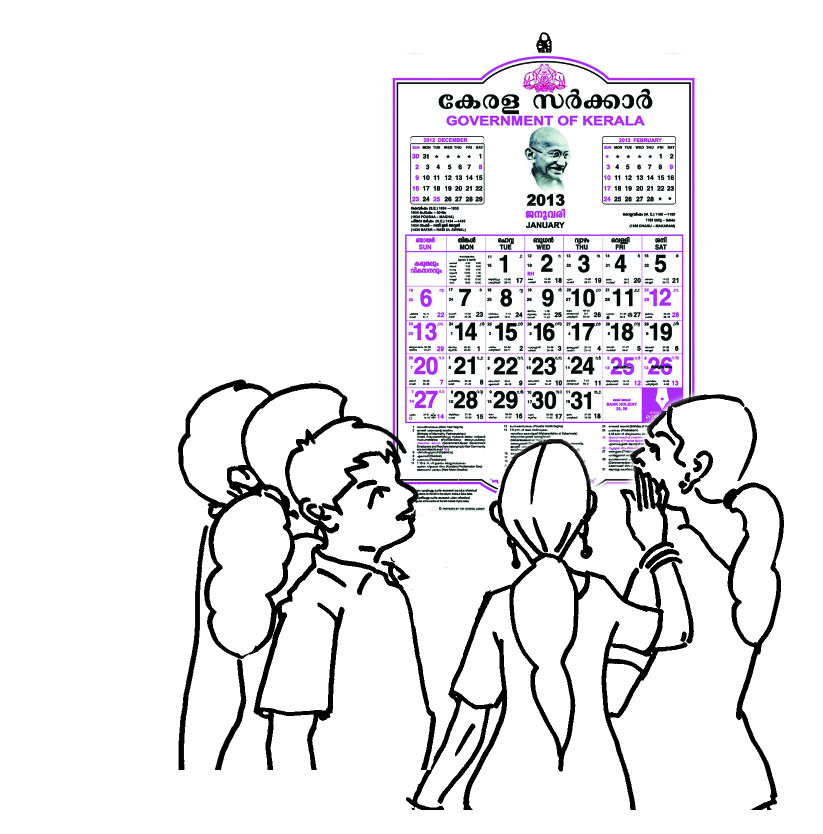
15
15
A Road to History
A Road to History
Have a Glance at the Calendar
What are the different eras mentioned in the
calendar? Write them down.
•
Christian Era
•
•
•
Centuries
Do you know in which century you are living? Yes, in the 21st
century.
Do you know when it began?
A century denotes 100 years. For example, AD 1 to AD 100 is
the first century. AD 1901 to AD 2000 is the 20th century.
See the illustration below.
Identify the centuries to which the following years fall.
1-1-1901
31-12-2000
20th century
21st century
19th century
In history, the question 'when' is very important. The
chronological sense helps us to find out the answer to this
question. The chronological order and sense are inevitable in
recording and learning history.
Year
Century
AD 2014
AD 1947
AD 1857
261 BC
326 BC
Page 16


Social Science V
Social Science V
16
16
Summary
•
History is the record of the progress human beings acquired
through the ages.
•
The tools, coins, utensils, other historical remains, and
the written documents are the major sources that help us
to record history.
•
The period with written documents is called Historic Period
and the period prior to written documents is called Pre-
Historic Period.
•
History is divided into AD and BC. (Now also known as
CE and BCE)
Significant learning outcomes
•
Explains that history is recorded on the basis of evidences.
•
Differentiates between Historic and Pre-Historic Periods.
•
Analyses the concepts of AD, BC and century.
•
Describes the need of conserving historical monuments.
•
Acquaints methodology of writing local history.
Let us assess
•
List out the various evidence that are helpful in recording
history.
•
Classify the following into historic and pre-historic sources.
•
Coins
•
Stone weapons
•
Books
•
Ancient earthenware
•
Cave paintings
•
Palm leaves
•
Stamps
Page 17
17
17
A Road to History
A Road to History
•
Visit any historical remains (forts, ancient buildings, ponds,
statues, etc.) in your locality and draft a report on the
measures taken for their preservation.
•
Examine the coins belong to different ages and list out the
information that can be found out from them.
•
Prepare a poster for the protection of historical monuments
•
With the help of elders, collect the folk wisdom, folksongs,
and legends once popular in your locality. Prepare a
magazine based on the information collected.
•
Collect the pictures, news and advertisements related to
historical monuments and exhibit them on the display
board.
Extended activities
Page 18
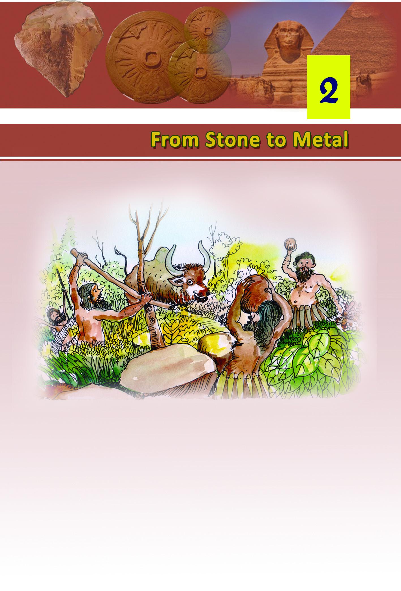
1818
18
Social Science V
Social Science V
Early human life - An illustration
The picture given above depicts the early human life. What
can you identify from the picture?
•
Early human beings lived in forests
•
•
Page 19
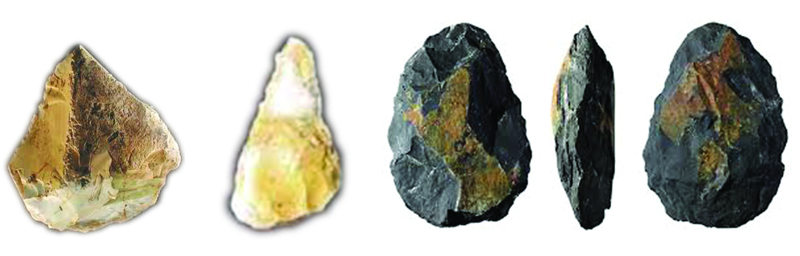
From Stone to Metal
From Stone to Metal
19
19
19
A human being does not have a gigantic body like that of an
elephant, sharp claws like that of a tiger or the strength of a
bison.
Hence tools and weapons were essential for the early men to
defend themselves from wild animals and to collect food. For
this pupose, they used stones. As stone was the material that
influenced the early human life the most, this period came to
be known as 'Stone Age'.
Palaeolithic Age
The rough stones that the early humans used can be seen in
the picture.
For what purpose might these stones have been used?
•
To hunt animals
•
To defend oneself from the attack of animals.
•
To dig up edible tubers
•
The period in which rough stones were used as tools and
weapons is called Palaeolithic Age (Old Stone Age).
During this age, man lived in caves and ate fruits and tubers,
and meat of hunted animals. The use of fire was an invention
of this age.
Stone weapons of the Palaeolithic Age
Page 20
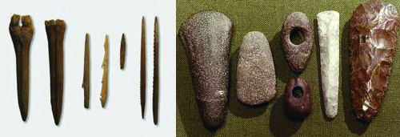
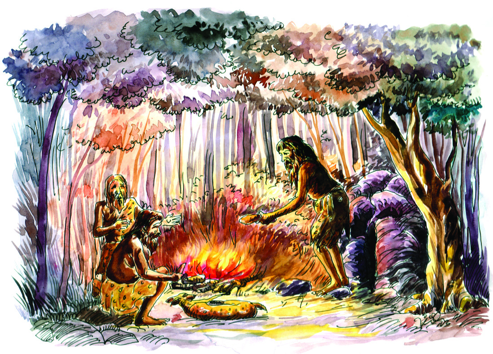
2020
20
Social Science V
Social Science V
For what purposes fire might have been used by the early
man? Discuss.
•
•
Neolithic Age
Later, man used the weapons as shown in the picture above.
What differences do these weapons have from those of the
Palaeolithic Age?
•
Sharper
•
Polished
Neolithic weapons
Use of fire in the Palaeolithic Age. - An illustration